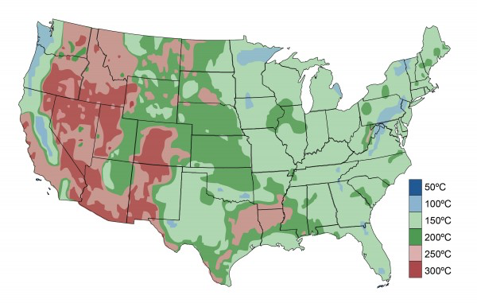
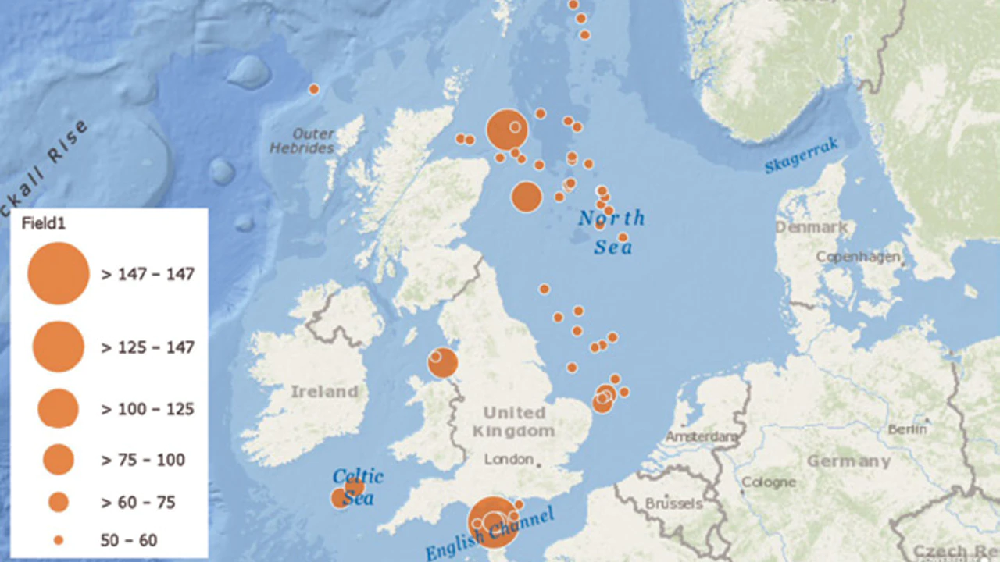

11 Geothermal
It is the only other thing that you could essentially attach to the current grid, almost anywhere in the world — in fact, below current cities. It seems like science fiction, right? Drilling to the center of the earth? But it’s not. It’s a super exciting clean power generation area

Figure: U.S. geothermal resources at 10 kilometers depth
Enthalpy
Enthalpy is a property of a thermodynamic system, defined as the sum of the system’s internal energy and the product of its pressure and volume, H = U + pV. It is a convenient state function standardly used in many measurements in chemical, biological, and physical systems at a constant pressure. The pressure-volume term expresses the work required to establish the system’s physical dimensions, i.e. to make room for it by displacing its surroundings. As a state function, enthalpy depends only on the final configuration of internal energy, pressure, and volume, not on the path taken to achieve it.
The unit of measurement for enthalpy in the International System of Units (SI) is the joule. Other historical conventional units still in use include the British thermal unit (BTU) and the calorie.
The total enthalpy of a system cannot be measured directly because the internal energy contains components that are unknown, not easily accessible, or are not of interest in thermodynamics. In practice, a change in enthalpy (ΔH) is the preferred expression for measurements at constant pressure, because it simplifies the description of energy transfer. When matter transfer into or out of the system is also prevented, the enthalpy change equals the energy exchanged with the environment by heat.
11.2 Deep Drilling
11.2.1 Ultra Deep Drilling
Quaise Energy Inc. has teamed with the Laboratory for Scientific Computing (LabSC) to develop computational models of the interaction of high-energy beams with geological materials. The models developed will provide understanding of the fundamental physics underlying the operation of a gyrotron-powered millimeter-wave (MMW) energy drilling system developed by Quaise, a spin-off company born from research at MIT (Massachusetts Institute of Technology) Plasma Science and Fusion Center.
This new, breakthrough technology will be used for MMW drilling to reach depths of 10-20 km below the earth’s surface, which is beyond what can be accomplished today using conventional drilling. Deep drilling will enable harvesting supercritical geothermal energy with power densities several order of magnitudes larger than wind or solar energy, thus opening the opportunity for accessing a clean, carbon-free and power-dense energy source anywhere around the world.
The successful development of a commercial system has to overcome technical challenges related to the interaction of millimeter electromagnetic waves with basement rock formations at extreme conditions and far-field transport of material.
North Sea Geothermal
Platforms in the UK North Sea could be converted to run on geothermal energy, providing power to the offshore field facilities or feeding power to markets in Europe via trans-North Sea interconnector grids.
Traditionally, once an oil or gas field reaches the end of its productive life, its production platform is decommissioned. The structure may be removed and taken ashore for recycling/reuse, or part of the platform may remain on the seabed, perhaps creating an artificial reef. However, another alternative is becoming a more viable option – re-using the platform to extract geothermal energy. If applied to redundant platforms in the North Sea, this could create a whole new industry employing thousands of workers in new productive jobs in the offshore and onshore support sectors.

Figure: UK 50 hottest geothermal gradient wells by degrees C.
The UK continental shelf (UKCS) where many platforms are situated has a relatively thin earth’s crust – around 10 km (6.2 mi) thick compared to 40-70 km (25-43 mi) thick on land – which gives the wells their high bottomhole temperatures. There are more than 50 wells in the region with a geothermal gradient more than 122°F (50°C)/km, the highest being 296°F (147°C)/km. At Total’s Elgin-Franklin high-pressure/high-temperature (HP/HT) gas condensate development in the UK central North Sea, one of the wells was drilled to a depth of 6,100 m (20,013 ft), with a temperature of 387°F (197°C) and a pressure of 16,750 psi (1,155 bar).
Heat from these wells could be employed to generate electricity on board the platform that could in turn be routed to the UK’s national grid via subsea cables. North Sea platforms have the advantage of being surrounded by cold sea water, which is at a much lower temperature than the onshore air cooling towers that are the conventional means of condensing a generating plant’s working fluids after they have passed through the turbines.
It would also be possible to re-inject waste heat remaining in the fluids back into the subsurface oil-bearing level to increase field pressure and flows, thereby enhancing secondary oil recovery and extending field life. Furthermore, discovery of further oil fields might follow when drilling to greater depths to tap the geothermal energy beneath the platforms.
Geothermal energy has huge potential when set in context against other energy reserves. All fossil fuels, i.e. coal, oil and gas, come from the earth’s crust. The crust makes up only 0.4% of the total mass of the planet, the remaining 99.6% being hotter than 932°F (500°C) within the crust, increasing to 9,032°F (5,000°C) at the core. The pressures within the earth are constantly generating this heat naturally. This means that geothermal energy is infinite in its nature, as it is naturally renewable.
Recent research carried out in Russia, in the Kola Peninsula, has revealed moving fluids and open fractures at depths more than 12 km (7.5 mi). This discovery has led to a review of current deep geological thinking and has opened the development of geothermal energy extraction for electrical power generation.
There are three types of geothermal energy. One – Geo-pressure – is where you have a high wellhead pressure, to which you can attach a hydroelectric type turbine to generate the power or electrical power from a natural gas letdown station. The twin screw turbine design from Langson Energy produces 1 MW electrical output, operating in temperatures from 350-550°F (177-288°C) and up to pressures of 600 psi (42 bar). This is already deployed by the natural gas industry to generate power, where the gas mains changes pressure to use the power instead of it being wasted. A second is created by separating the gas from the oil/water brine and using it like a diesel-type generator, i.e. burning the gas to produce power, which could provide an alternative to flaring on certain offshore installations. The third involves using the temperature, as in the high-pressure steam, steam, Organic Rankine Cycleturbine system. This approach could be applied to platforms or on a nearby support vessel.